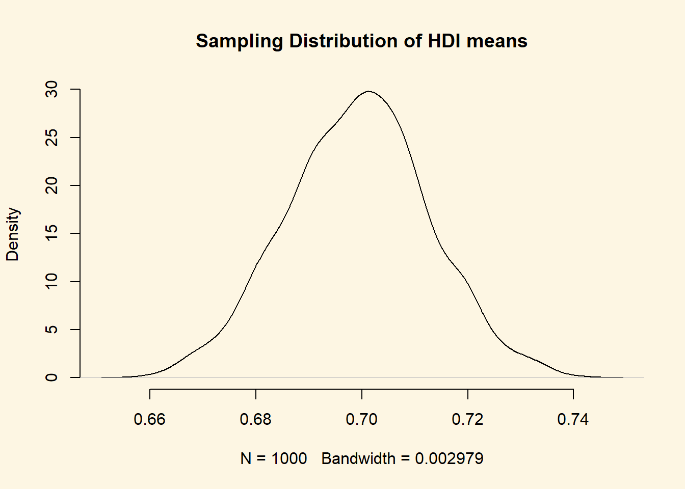
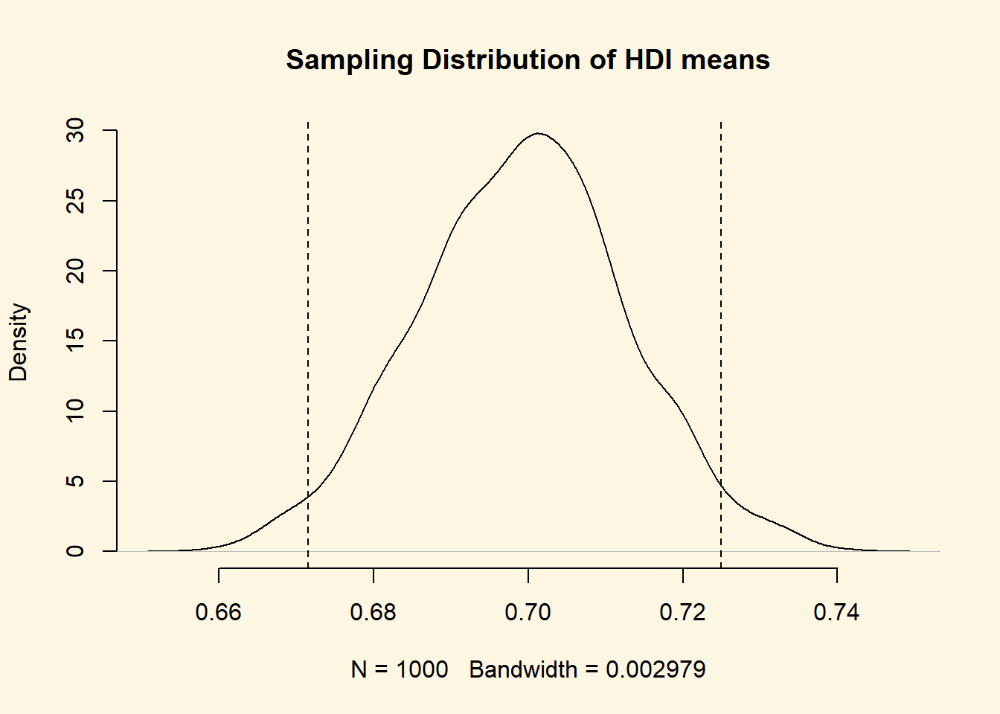
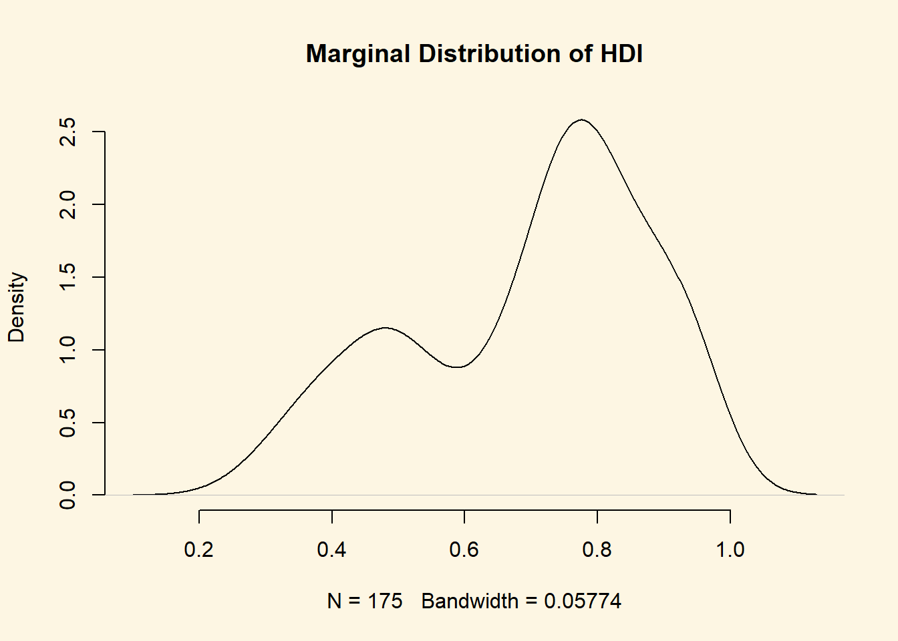

Chapter 3 Sampling and Distributions
3.1 Seminar
In today’s seminar, we work with missing data. We will turn a numerical variable into a nominal data type. We then turn to distributions.
rm(list=ls())
setwd("~/PUBLG100")3.1.1 Loading Dataset in CSV Format
In this seminar, we load a file in comma separated format (.csv). The load() function from last week works only for the native R file format. To load our csv-file, we use the read.csv() function.
Our data comes from the Quality of Government Institute. Let’s have a look at the codebook:
Download the data here
| Variable | Description |
|---|---|
| h_j | 1 if Free Judiciary |
| wdi_gdpc | Per capita wealth in US dollars |
| undp_hdi | Human development index (higher values = higher quality of life) |
| wbgi_cce | Control of corruption index (higher values = more control of corruption) |
| wbgi_pse | Political stability index (higher values = more stable) |
| former_col | 1 = country was a colony once |
| lp_lat_abst | Latitude of country’s captial divided by 90 |
world.data <- read.csv("QoG2012.csv")Go ahead and (1) check the dimensions of world.data, (2) the names of the variables of the dataset, (3) print the first six rows of the dataset. (
# the dimensions: rows (observations) and columns (variables)
dim(world.data)[1] 194 7# the variable names
names(world.data) [1] "h_j" "wdi_gdpc" "undp_hdi" "wbgi_cce" "wbgi_pse"
[6] "former_col" "lp_lat_abst"# top 6 rows of the data
head(world.data) h_j wdi_gdpc undp_hdi wbgi_cce wbgi_pse former_col lp_lat_abst
1 0 628.4074 NA -1.5453584 -1.9343837 0 0.3666667
2 0 4954.1982 0.781 -0.8538115 -0.6026081 0 0.4555556
3 0 6349.7207 0.704 -0.7301510 -1.7336243 1 0.3111111
4 NA NA NA 1.3267342 1.1980436 0 0.4700000
5 0 2856.7517 0.381 -1.2065741 -1.4150945 1 0.1366667
6 NA 13981.9795 0.800 0.8624368 0.7084046 1 0.18922223.1.2 Missing Values
Let’s inspect the variable h_j. It is categorical, where 1 indicates that a country has a free judiciary. We use the table() function to find the frequency in each category.
table(world.data$h_j)
0 1
105 64 We now know that 64 countries have a free judiciary and 105 countries do not.
Conceptually the variable is nominal. To see how the variable is stored in R, we can use the str() function.
str(world.data$h_j) int [1:194] 0 0 0 NA 0 NA 0 0 1 1 ...The function returns ‘int’ which abbreviates ‘integer’, i.e., a numeric type. The function also shows us the first 10 realisations of the variable. We se zeroes and ones which are the two categories. We also see NA’s which abbreviates not available. NAs are missing values. Values can be missing for different reasons. For instance, a coder may have forgotten to code whether a country had been colonised at some point in its history or the country may be new and the categories, therefore, don’t apply. It is important for us that we cannot calculate with NAs.
There are different ways of dealing with NAs. We will always delete missing values. Our dataset must maintain its rectangular structure. Hence, when we delete a missing value from one variable, we delete it for the entire row of the dataset. Consider the following example.
| Row | Variable1 | Variable2 | Variable3 | Variable4 |
|---|---|---|---|---|
| 1 | 15 | 22 | 100 | 65 |
| 2 | NA | 17 | 26 | 75 |
| 3 | 27 | NA | 58 | 88 |
| 4 | NA | NA | 4 | NA |
| 5 | 75 | 45 | 71 | 18 |
| 6 | 18 | 16 | 99 | 91 |
If we delete missing values from Variable1, our dataset will look like this:
| Row | Variable1 | Variable2 | Variable3 | Variable4 |
|---|---|---|---|---|
| 1 | 15 | 22 | 100 | 65 |
| 3 | 27 | NA | 58 | 88 |
| 5 | 75 | 45 | 71 | 18 |
| 6 | 18 | 16 | 99 | 91 |
The new dataset is smaller than the original one. Rows 2 and 4 have been deleted. When we drop missing values from one variable in our dataset, we lose information on other variables as well. Therefore, you only want to drop missing values on variables that you are interested in. Let’s drop the missing values on our variable h_j. We do this in several steps.
First, we introduce the is.na() function. We supply a vector to the function and it checks for every element, whether it is missing or not. R returns true or false. Let’s use the function on our variable.
is.na(world.data$h_j) [1] FALSE FALSE FALSE TRUE FALSE TRUE FALSE FALSE FALSE FALSE TRUE
[12] FALSE FALSE FALSE FALSE FALSE FALSE FALSE FALSE FALSE FALSE TRUE
[23] TRUE FALSE FALSE FALSE FALSE FALSE FALSE FALSE FALSE FALSE FALSE
[34] FALSE FALSE FALSE FALSE FALSE FALSE FALSE FALSE FALSE FALSE FALSE
[45] FALSE FALSE FALSE FALSE FALSE FALSE FALSE FALSE FALSE FALSE FALSE
[56] FALSE FALSE FALSE FALSE FALSE FALSE FALSE FALSE FALSE FALSE FALSE
[67] TRUE FALSE FALSE FALSE FALSE FALSE FALSE FALSE FALSE FALSE FALSE
[78] FALSE FALSE FALSE FALSE FALSE FALSE FALSE FALSE FALSE FALSE FALSE
[89] FALSE FALSE FALSE FALSE FALSE FALSE FALSE FALSE FALSE FALSE FALSE
[100] TRUE FALSE FALSE FALSE FALSE FALSE FALSE FALSE TRUE FALSE FALSE
[111] FALSE TRUE FALSE FALSE FALSE FALSE FALSE FALSE FALSE TRUE FALSE
[122] FALSE TRUE FALSE FALSE FALSE FALSE FALSE TRUE TRUE TRUE FALSE
[133] FALSE FALSE FALSE FALSE FALSE FALSE FALSE FALSE TRUE FALSE FALSE
[144] FALSE FALSE TRUE TRUE TRUE TRUE TRUE FALSE FALSE FALSE TRUE
[155] FALSE FALSE FALSE FALSE FALSE FALSE FALSE FALSE FALSE FALSE TRUE
[166] FALSE FALSE FALSE FALSE FALSE FALSE FALSE TRUE FALSE FALSE FALSE
[177] FALSE FALSE TRUE FALSE FALSE FALSE FALSE FALSE FALSE FALSE FALSE
[188] FALSE FALSE FALSE TRUE FALSE FALSE FALSETo see the amount of missingness in the variable h_j, we can combine is.na() with the table() function.
table( is.na(world.data$h_j) )
FALSE TRUE
169 25 So, we have 25 missing values on h_j. Our dataset has 194 rows. Check your global environment to confirm this or use the nrow() function. That means, if we drop all missing values from h_j, the our dataset world.data will lose 25 rows.
Before we drop the missings, we introduce the which() function. It returns the row indexes (the rows in the dataset) where some condition is true. So if we use which() and is.na(), we get the row numbers in the world.data dataset where values are missing on h_j.
which( is.na( world.data$h_j ) ) [1] 4 6 11 22 23 67 100 108 112 120 123 129 130 131 141 146 147
[18] 148 149 150 154 165 173 179 191We said that our dataset will lose 25 rows. Let’s use the length() function to confirm that this is the case.
length( which( is.na( world.data$h_j ) ) ) [1] 25We have, indeed, identified 25 rows that we want to delete from our dataset.
The function is.na() returns “TRUE” if an observation is missing. We can use the ! operator so that the function returns “TRUE” if an observation is not missing. The ! means not.
Let’s confirm this:
# true = observation is missing
table( is.na(world.data$h_j) )
FALSE TRUE
169 25 # true = observations is NOT missing
table( !is.na(world.data$h_j) )
FALSE TRUE
25 169 We now drop the rows with missings on h_j by overwriting our original dataset with a new dataset that is a copy of the old without the missings. We use the square brackets to subset our dataset.
world.data <- world.data[ !is.na( world.data$h_j ) , ] Confirm that our new world.data dataset has only 169 remaining.
“But what if we want our original dataset back,” you ask. We have overwritten the original. It is no longer in our work environment. We have to reload the data set from the disk.
Let’s do that:
world.data <- read.csv("QoG2012.csv")Right, we now have all observations back. This is important. Let’s say we need to drop missings on a variable. We do is. If a later analysis does not involve that variable, we want all the observations back. Otherwise we would have thrown away valuable information. The smaller our dataset, the less information it contains. Less information will make it harder for us to detect systematic correlations. We have to options. Either we reload the original dataset or we create a copy of the original with a different name that we could use later on. Let’s do this.
full.dataset <- world.dataLet’s drop missings on h_j in the world.data dataset.
world.data <- world.data[ !is.na( world.data$h_j ) , ] Now, if we want the full dataset back, we can overwrite world.data with full.dataset. The code would be the following:
world.data <- full.datasetIf you ran this line. Delete missings from h_j in world.data again.
This data manipulation may seem boring but it is really important that you know how to do this. Most of the work in data science is not running statistical models but data manipulation. Most of the dataset you will work with in your jobs, as a research assistant or on you dissertation won’t be cleaned for you. You will have to do that work. It takes time and is sometimes frustrating. That’s unfortunately the same for all of us.
3.1.3 Factor Variables
Categorical/nominal variables can be stored as numeric variables in R. However, the values do not imply an ordering or relative importance. We often store nominal variables as factor variables in R. A factor variable is a nominal data type. The advantage of turning a variable into a factor type is that we can assign labels to the categories and that R will not calculate with the values assigned to the categories.
The function factor() lets us turn the variable into a nominal data type. The first argument is the variable itself. The second are the category labels and the third are the levels associated with the categories. To know how those correspond, we have to scroll up and look at the codebook.
We also overwrite the original numeric variable h_j with our nominal copy indicated by the assignment arrow <-.
# factorize judiciary variable
world.data$h_j <- factor(world.data$h_j, labels = c("controlled", "free"), levels = c(0,1))
# frequency table of judiciary variable
table(world.data$h_j)
controlled free
105 64 3.1.4 Renaming Variables
We want to rename h_j into something more meaningful. The new name should be free.judiciary. We can use the names() function to get a vector of variable names.
names(world.data)[1] "h_j" "wdi_gdpc" "undp_hdi" "wbgi_cce" "wbgi_pse"
[6] "former_col" "lp_lat_abst"We want to change the first element of that vector. We know that we can use square brackets to subset vectors. Let’s display the first element of the vector of variable names only.
names(world.data)[1][1] "h_j"Now we simply change the name using the assignment arrow <- and our new variable names goes in quotes.
names(world.data)[1] <- "free.judiciary"We now check the variable names to confirm that we successfully changed the name.
names(world.data)[1] "free.judiciary" "wdi_gdpc" "undp_hdi" "wbgi_cce"
[5] "wbgi_pse" "former_col" "lp_lat_abst" 3.1.5 Distributions
A marginal distribution is the distribution of a variable by itself. Let’s look at the summary statistics of the United Nations Development Index undp_hdi using the summary() function.
summary(world.data$undp_hdi) Min. 1st Qu. Median Mean 3rd Qu. Max. NA's
0.2730 0.5272 0.7455 0.6946 0.8350 0.9560 9 How nice. This returns summary stats. We see the range(minimum to maximum). We see the interquartile range (1st quartile to 3rd quartile). We also see mean and median. Finally, we see the number of NAs.
Oh we forgot. We said, when we drop missing on variable, we may lose information when we work on a new variable. Let’s restore our dataset world.data to its original state.
world.data <- full.datasetNow, we check the summary stats again.
summary(world.data$undp_hdi) Min. 1st Qu. Median Mean 3rd Qu. Max. NA's
0.2730 0.5390 0.7510 0.6982 0.8335 0.9560 19 In the smaller dataset (where we had dropped missings from h_j), we had 9 missings. Now, we have 19 missings. The difference is 10. Our smaller dataset had 25 rows less than the bigger dataset. Therefore, we would have thrown away 6 good observations. That is not nothing. It’s 3 percent of our data.
Let’s drop missing on undp_hdi and rename it to hdi.
world.data <- world.data[ which( !is.na(world.data$undp_hdi) ) , ]Let’s change the name.
names(world.data)[3] <- "hdi"
names(world.data)[1] "h_j" "wdi_gdpc" "hdi" "wbgi_cce" "wbgi_pse"
[6] "former_col" "lp_lat_abst"Let’s take the mean of hdi.
hdi.mean <- mean( world.data$hdi )
hdi.mean[1] 0.69824The mean of hdi is the mean in the sample. We would like the mean of hdi in the population. Remember that sampling variability causes us to estimate a different mean every time we take a new sample.
We learned that the means follow a distribution if we take the mean repeatedly in different samples. In expectation the population mean is the sample mean. How certain are we about the mean. Well, we need to know how the sampling distribution looks like.
To find out we estimate the standard error of the mean. The standard error is the standard deviation of the sampling distribution. The name is not standard deviation but standard error to indicate that we are talking about the distribution of a statistic (the mean) and not a random variable.
The formula for the standard error of the mean is:
\[ s_{\bar{x}} = \frac{ \sigma }{ \sqrt(n) } \]
The \(\sigma\) is the real population standard deviation of the random variable hdi which is unknown to us. We replace the population standard deviation with our sample estimate of it.
\[ s_{\bar{x}} = \frac{ s }{ \sqrt(n) } \]
The standard error of the mean estimate is then
se.hdi <- sd(world.data$hdi) / sqrt( nrow(world.data) )
se.hdi[1] 0.01362411Okay, so the mean is 0.69824 and the standard error of the mean is 0.0136241.
We know that the sampling distribution is approximately normal. That means that 95 percent of all observations are within 1.96 standard deviations (standard errors) of the mean.
\[ \bar{x} \pm 1.96 \times s_{\bar{x}} \]
So what is that in our case?
lower.bound <- hdi.mean - 1.96 * se.hdi
lower.bound[1] 0.6715367upper.bound <- hdi.mean + 1.96 * se.hdi
upper.bound[1] 0.7249432That now means the following. Were we to take samples of hdi again and again and again, then 95 percent of the time, the mean would be in the range from 0.6715367 to 0.7249432.
What is a probability? “The long-run relative frequency,” you all scream in unison. Given that definition, you can say: “With 95 percent probability, the mean is in the range 0.6715367 to 0.7249432.”
Sometimes people like to former way of phrasing this relationship better than the latter. In this case you tell them: “a probability is the long-run relative frequency of an outcome.”
Now, let’s visualise our sampling distribution. We haven’t actually taken many samples, so how could we visualise the sampling distribution? Well, we know the sampling distribution looks normal. We know that the mean is our mean estimate in the sample. And finally, we know that the standard deviation is the standard error of the mean.
We can randomly draw values from a normal distribution with mean 0.69824 and standard deviation 0.0136241. We do this with the rnorm() function. It’s first argument is the number of values to draw at random from the normal distribution. The second argument is the mean and the third is the standard deviation.
Recall, that a normal distribution has two parameters that characterise it completely: the mean and the standard deviation. So with those two we can draw the distribution.
draw.of.hdi.means <- rnorm( 1000, mean = hdi.mean, sd = se.hdi )We have just drawn 1000 mean values at random from the distribution that looks like our sampling distribution.
plot(
density( draw.of.hdi.means ),
bty = "n",
main = "Sampling Distribution of HDI means"
)
Beautiful Let’s add the 95 percent confidence interval around our mean estimate. The confidence interval quantifies our uncertainty. We said 95 percent of the time the mean would be in the interval from 0.6715367 to 0.7249432."
abline( v = lower.bound, lty = "dashed")
abline( v = upper.bound, lty = "dashed")You do not need to run the plot function again. You can just add to the plot. Check the help function of abline() to see what its arguments refer to.

Fantastic! You can see that values below and above our confidence interval are quite unlikely. Those values in the tails would not occur often.
Not often, but not impossible.
Let’s say that we wish know the probability that we take a sample and our estimate of the mean is greater or equal 0.74. We would need to integrate over the distribution from \(-\inf\) to 0.74. Fortunately R has a function that does that for us. We need the pnorm(). It calculates the probability of a value that is smaller or equal to the value we specify. In other words, it gives us the probability from the cumulative normal.
As the first argument pnrom() wants the value; 0.74 in our case. The second and third arguments are the mean and the standard deviation that characterise the normal distribution.
pnorm(0.74, mean = hdi.mean, sd = se.hdi)[1] 0.9989122What!? The probability to draw a mean 0.74 is 99.9 percent!? That cannot be the value is so far in the tail of the distribution.
Well, this is the cumulative probability of drawing a value that is equal to or smaller than 0.74. All probabilities sum to 1. So if we want to know the probability of drawing a value that is greater than 0.74, we subtract the probability, we just calculated, from 1.
1 - pnorm(0.74, mean = hdi.mean, sd = se.hdi)[1] 0.001087785Right, so the probability of getting a mean of hdi in a sample is 0.1 percent.
3.1.6 Conditional Distributions
Let’s look at hdi by former_col. The variable former_col is 1 if a country is a former colony and 0 otherwise. The variable hdi is continuous.
Before we start, we plot the marginal pdf of hdi.
plot(
density(world.data$hdi),
bty = "n",
main = "Marginal Distribution of HDI"
)
The distribution is bimodal. There is one peak at the higher development end and one peak at the lower development end. Could it be that these two peaks are conditional on whether a country was colonised or not? Let’s plot the conditional distributions.
plot(
density(world.data$hdi[world.data$former_col == 0]),
bty = "n",
main = "Conditional Distributions of HDI"
)
lines(density(world.data$hdi[world.data$former_col == 1]), lty = "dashed")
legend("topleft", c("not colonised", "colonised"), lty = c("solid", "dashed"))It’s not quite like we expected. The distribution of human development of not colonised countries is shifted to right of the distribution of colonised countries and it is clearly narrower. Interestingly though, the distribution of former colonies has a greater variance. Evidently, some former colonies are doing very well and some are doing very poorly. It seems like knowing whether a country was colonised or not tells us something about its likely development but not enough. We cannot, e.g., say colonisation is the reason why countries do poorly. Probably, there are differences among types of colonial institutions that were set up by the colonisers.
Let’s move on and examine the probability that a country has .8 or more on hdi given that it is a former colony.
We can get the cumulative probability with the ecdf() function. It returns the empirical cumulative distribution, i.e., the cumulative distribution of our data. We know that we can subset using square brackets. That’s all we need.
cumulative.p <- ecdf(world.data$hdi[ world.data$former_col == 1 ])
1 - cumulative.p(.8)[1] 0.1666667Okay, the probability that a former colony has .8 or larger on the hdi is 16.6 percent. Go ahead figure out the probability for not former colonies on your own.
3.1.7 Exercises
- Create a script and call it assignment03. Save your script.
- Load the world.data dataset from your disk.
- Rename the variable wdi_gdpc into gdpc.
- Delete missing values from gdpc.
- Inspect former_col and delete missing values from it.
- Turn former_col into a factor variable with the appropriate lables.
- Compute the probability that a county is richer than 55 000 per capita.
- Compute the same probability given that a country is a former colony.
- Compute the conditional expectation of wealth (gdp per capita) for a former colony.
- Compute the conditional expectation of wealth for country that is not a former colony.
- What is the probability that a former colony is 2 standard deviations below the mean wealth level?
- What is the corresponding probability for a country that has not been colonised?
- Compute the probability that a former colony is the wealth interval from 25 000 to 31 000.
- Copmute the probability that a not former colony is in the top 2.5 percent of the wealth distribution.
- At which wealth level is a country in the bottom 2.5 percent of the wealth distribution?